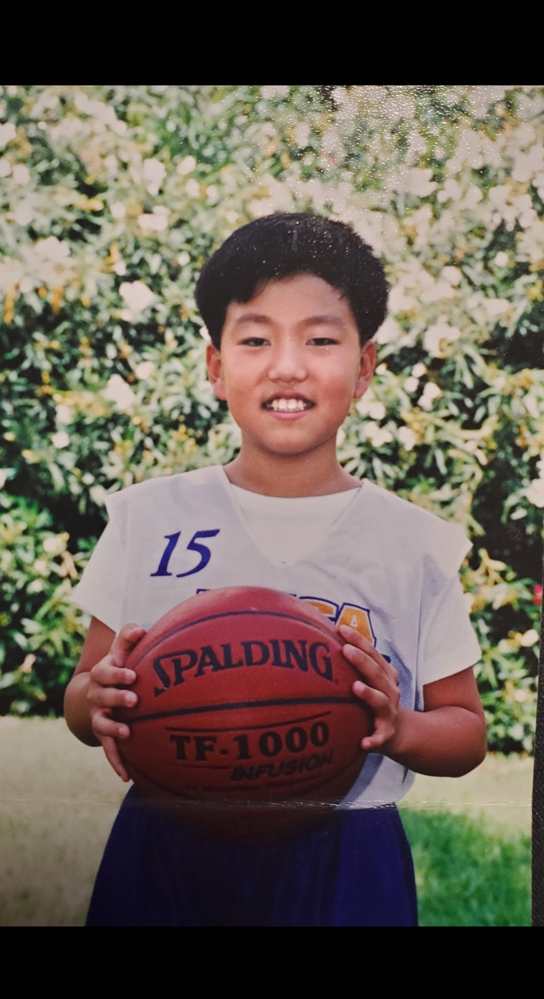
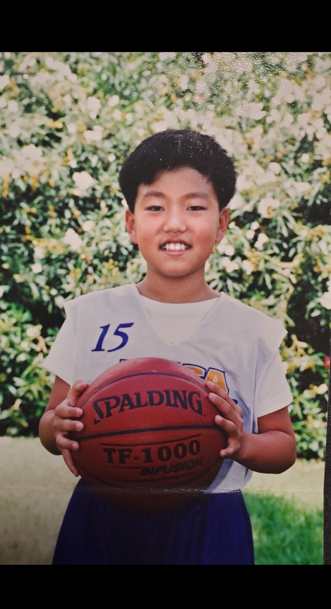

Email: danchanyoungkim@gmail.com
Github: danchanyoungkim
Linkedin: Dan Kim
Email #2: sunbear1031@gmail.com
Picture-1: Before Covid-19; Paris, France.
Picture-2: Elementary schooler in basketball camp.
Video-1: Later years of college.
Video-2: During Covid-19; after gaining 20 lbs.
 
